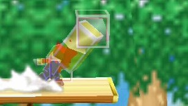
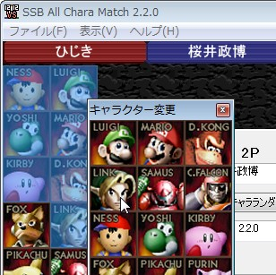
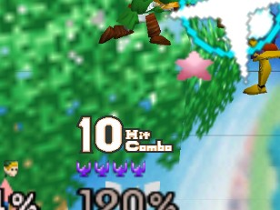
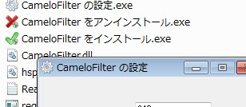
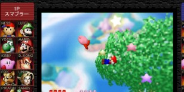
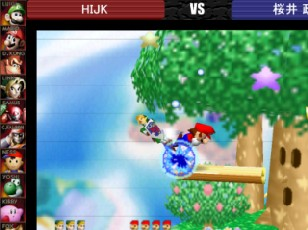
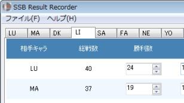
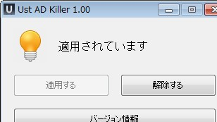

This is an archive of http://holyweb.pgw.jp/ | これは非公式のバックアップです | Retrieved: 6/2/2020
Software
SSB Framedisplay 1.00

64スマブラの攻撃判定などを視覚的に確認することができます。全キャラクターのほとんどの攻撃技に対応しています。
SSB All Chara Match 2.2.1

大幅なインターフェース改善、キャラ変更機能追加など様々な面で生まれ変わったSSB All Chara Matchです。ウィンドウを小さく表示できる「コンパクトモード」、キャラアイコンの一括変更など、かゆいところに手が届くようになりました。
SSB ComboCounter OPS 1.0.1

64スマブラをプレイする際、格闘ゲームのようなコンボカウンターをゲーム画面に上乗せ表示できます。使用するスキンを変更すれば、オリジナルのコンボカウンターを表示することができます。
SSB ComboCounter CF 1.1.0

64スマブラをライブ配信する際、格闘ゲームのようなコンボカウンターを配信画面に表示できます。使用するスキンを変更すれば、オリジナルのコンボカウンターを表示することができます。
CameloFilterManager 1.0.0

きりん 氏作成の「CameloFilter」のインストール・設定を補助します。当サイトのCameloFilterタグが付けられたアプリケーションを使用するのに必要です。
Older(NotSupport)
SSB All Chara Match 1.01

64スマブラの12キャラ対決などをライブ配信する際、配信画面を彩ります。
SSB All Chara Match 2.0.0(β)

2.x.xの開発中にテストとして公開されたβバージョンです。正式版の2.x.xとはインターフェースなどが異なります。キャラ変更機能もありません。
SSB ResultRecorder 1.00

64スマブラの戦績管理を補助します。機能を最低限に抑え、シンプルに仕上げました。
Ust AD Killer 1.00

Ustream視聴中に出てくる広告を非表示にするアプリです。ワンタッチで適用でき、非常駐型です。
Ustreamの仕様変更により使用できなくなりました。以前適用していた方が解除する目的でのみダウンロードして下さい。
Ustreamの仕様変更により使用できなくなりました。以前適用していた方が解除する目的でのみダウンロードして下さい。
History
2014/04/18
SSB ComboCounter OPS 1.0.0 リリース
SSB ComboCounter OPS 1.0.1 リリース
HIJIKI SOFT 一部デザイン修正
SSB ComboCounter OPS 1.0.1 リリース
HIJIKI SOFT 一部デザイン修正
2014/04/12
SSB All Chara Match 2.2.1 リリース
2014/04/10
SSB All Chara Match 2.2.0 リリース
2014/04/01
SSB All Chara Match 2.1.0 リリース
View All
2014/04/18
SSB ComboCounter OPS 1.0.0 リリース
SSB ComboCounter OPS 1.0.1 リリース
HIJIKI SOFT 一部デザイン修正
SSB ComboCounter OPS 1.0.1 リリース
HIJIKI SOFT 一部デザイン修正
2014/04/12
SSB All Chara Match 2.2.1 リリース
2014/04/10
SSB All Chara Match 2.2.0 リリース
2014/04/01
SSB All Chara Match 2.1.0 リリース
2014/02/20
SSB All Chara Match 2.0.0 リリース
SSB All Chara Match 1.0.1 および 2.0.0β サポート終了
SSB All Chara Match 1.0.1 および 2.0.0β サポート終了
2014/01/28
HIJIKI SOFT デザインリニューアル
2014/01/14
SSB ComboCounter CF 1.1.0 リリース
2013/10/09
CameloFilterManager リリース
SSB ComboCounter CF リリース
SSB ComboCounter CF リリース
2013/09/10
SSB All Chara Match 2.0.0β リリース
2012/09/23
HIJIKI SOFT オープン